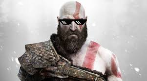
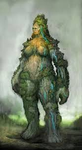
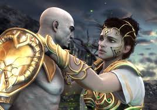
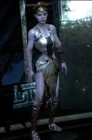

God of War 3
God of War 3 é um aclamado jogo de ação e aventura em terceira pessoa, concluindo a trilogia grega de Kratos em sua vingança contra os deuses do Olimpo. Lançado para PS3 em 2010 e remasterizado para PS4 (1080p/60fps) em 2015, o título traz batalhas brutais, cenários gigantescos e jogabilidade intensa, incluindo novas armas e poderes. omeça imediatamente após God of War II, com Kratos e os Titãs escalando o Monte Olimpo para destruir Zeus e os deuses. Focado em ação frenética, com uso principal das Blades of Exile (Lâminas do Exílio), além de novas armas como Nemean Cestus (Punho Nemeiano), Claws of Hades (Garras de Hades) e Nemesis Whip (Chicote de Nemesis).Inclui quebra-cabeças, QTEs (quick time events) e montarias em inimigos gigantes. O jogo é amplamente reconhecido por sua violência gráfica e batalhas épicas, consolidando-se como uma "obra-prima" do gênero.
Personagens:
God of War III foca na vingança de Kratos contra os deuses do Olimpo, liderados por Zeus. O jogo apresenta um elenco massivo de deuses gregos, titãs e monstros mitológicos, incluindo Atena, Gaia, Hades, Poseidon, Hefesto, Hermes, Hélios, Hera, Afrodite, Pandora e Hércules. A maioria dos personagens principais enfrenta Kratos e morre ao longo da trama.
Kratos:
O Kratos da franquia de jogos é um espartano mortal que se torna o Deus da Guerra após um trágico passado. Kratos era um respeitado capitão do exército espartano, mas com sede de poder. Em um momento de desespero durante uma batalha, ele invocou Ares, o deus da guerra, e jurou lealdade em troca de vitória. Ares o enganou, fazendo com que Kratos assassinasse sua própria esposa e filha em um templo. Amaldiçoado com as cinzas de sua família em sua pele, ele se tornou conhecido como o "Fantasma de Esparta". Consumido pela culpa e raiva, Kratos buscou vingança contra Ares e todo o panteão grego, descobrindo ser, na verdade, um semideus e filho de Zeus. Após matar Ares, ele ascendeu ao trono como o novo Deus da Guerra. A saga grega culmina com sua vingança contra Zeus e a destruição do Olimpo.
Gaia:
Gaia é a deusa da Terra e mãe de todos os deuses e titãs. Ela é uma das figuras mais poderosas do panteão grego, sendo considerada a personificação da natureza e da vida. Em God of War III, Gaia é retratada como uma entidade misteriosa e poderosa, que se revela como uma das principais forças que moldam o destino dos deuses e heróis. Sua presença no jogo simboliza a conexão entre o mundo natural e o divino. jogo começa com Gaia carregando Kratos e liderando os Titãs em uma escalada épica ao Monte Olimpo para destronar Zeus. jogo começa com Gaia carregando Kratos e liderando os Titãs em uma escalada épica ao Monte Olimpo para destronar Zeus. jogo começa com Gaia carregando Kratos e liderando os Titãs em uma escalada épica ao Monte Olimpo para destronar Zeus. jogo começa com Gaia carregando Kratos e liderando os Titãs em uma escalada épica ao Monte Olimpo para destronar Zeus. Após a derrota de Poseidon, Zeus atinge Gaia com um raio, fazendo-a despencar com Kratos. Quando Kratos pede ajuda para não cair, Gaia revela que ele foi apenas um "peão" usado pelos Titãs e o deixa cair no submundo, priorizando a vingança dos Titãs sobre a dele. Kratos sobrevive e, mais tarde, reencontra Gaia escalando a montanha novamente com o braço regenerado. Ele corta a mão dela, fazendo-a cair para sua aparente morte. Ela reaparece no confronto final entre Kratos e Zeus; a batalha entra em seu corpo, onde Kratos destrói seu coração com a Lâmina do Olimpo, matando-a definitivamente.
Atena:
Em God of War III, Atena, a Deusa da Sabedoria e da Guerra, aparece como um espírito ou uma entidade em um plano superior após sua morte no jogo anterior, agindo como uma guia ambígua e revelando ambições próprias, usando Kratos para destruir o Olimpo e buscar poder, entregando-lhe as Lâminas do Exílio e sugerindo planos maiores envolvendo a humanidade e a Esperança. Ela não é mais uma figura física, mas uma presença em um "estado superior" ou "existência superior", acessível a poucos, como Kratos, após sua morte por sua própria mão no final de GoW II. Retorna como uma aliada fundamental, oferecendo conselhos e armas, mas suas verdadeiras intenções são dúbias, sugerindo manipulação de Kratos para seus próprios fins, o que a torna uma vilã secreta, diz Fandom. Ela concede a Kratos as poderosas Lâminas do Exílio, substituindo as Lâminas do Caos, e explica que essa nova forma lhe permite ver verdades que antes não via, focando na necessidade da Chama do Olimpo e da Esperança para a humanidade evela ter planos que transcendem os deuses e os Nove Reinos, e sua ascensão a este estado, causada por um ato altruísta, a corrompeu e abriu seus olhos para verdades mais profundas. Atena em God of War III é uma força complexa, um espírito que manipula Kratos para alcançar objetivos que envolvem tanto a destruição do Olimpo quanto o destino da própria humanidade, em um nível cósmico que ainda está sendo explorado.
Pandora:
Pandora é uma figura mitológica que aparece em God of War III como uma deusa da esperança e da sabedoria. Ela é conhecida por ter aberto a caixa que trouxe desastres ao mundo, mas também por trazer a esperança. Em God of War III, Pandora é retratada como uma deusa poderosa e misteriosa, que se revela como uma das principais forças que moldam o destino dos deuses e heróis. Sua presença no jogo simboliza a conexão entre o mundo natural e o divino. Pandora aparece como uma figura ambígua, com intenções mistas, e é uma das figuras mais importantes do jogo. Pandora foi criada por Hefesto como um subproduto da criação da Caixa de Pandora. Ela é descrita como uma "chave viva" e o único ser capaz de extinguir a Chama do Olimpo, que protege a caixa. Inicialmente vista apenas como uma ferramenta, Kratos desenvolve um laço paternal com ela, que o lembra de sua falecida filha, Calíope. No clímax do jogo, Pandora se lança voluntariamente na Chama do Olimpo para permitir que Kratos acesse a caixa. Kratos tenta impedi-la, mas acaba cedendo diante da insistência dela de que este é seu destino. Após o sacrifício, Kratos abre a caixa e a encontra vazia, o que gera zombaria por parte de Zeus. Durante a batalha final mental contra Zeus, o espírito de Pandora guia Kratos, ajudando-o a perdoar a si mesmo e a despertar o Poder da Esperança. Esse poder estava dentro de Kratos desde o primeiro jogo, mas estava sufocado por sua culpa e ódio.
Tutorial:
Para zerar God of War 3 (ou a versão Remastered), você levará em média 10 horas em uma jogada direta focada na história.
1-Para facilitar a jornada, priorize o upgrade das Lâminas do Exílio (Blades of Exile). Você precisará de aproximadamente 100.001 orbes para maximizar todas as armas.
-Dica de Exploração: Colete 36 itens de upgrade (Olhos de Ciclope, Penas de Fênix e Chifres de Minotauro) para maximizar sua vida, magia e barra de itens. Após maximizar esses status, os baús que conteriam esses itens passarão a dar orbes vermelhas extras.
2-Poseidon (Início): Foque em atacar as garras do Leviatã que prendem Gaia. Quando Kratos for lançado contra o deus, use esquivas laterais para evitar os ataques elétricos.
-hades:Mantenha distância e use o arco se necessário. Quando ele tentar puxar sua alma, resista pressionando os botões indicados na tela (QTE).
cronos: A batalha ocorre sobre o corpo do próprio Titã. Use o Vento de Bóreas para abrir caminho e foque em destruir as correntes de ônix.
3-A Batalha Final contra Zeus:
- -Arena 2D: Use o L1 para contra-atacar os golpes físicos dele. Quando ele pular, prepare-se para saltar e evitar a onda de choque.
- -Coração de Gaia: Zeus criará clones. Use ataques de área (como a magia das Lâminas do Exílio) para eliminá-los rapidamente e recuperar vida atacando o coração de Gaia quando ele brilhar.
- -Fase Mental: Na sequência final dentro da mente de Kratos, siga a luz de Pandora e, no confronto final de "tela sangrenta", continue atacando Zeus até que a tela fique completamente vermelha para encerrar a história.
4-Movimentação Rápida: Você pode correr mais rápido segurando o botão de mira, esquivando e apertando R1 sucessivamente.
-Modo Hardcore: Se estiver jogando no modo Caos (muito difícil), o ganho de orbes é reduzido em 75%, tornando os upgrades muito mais lentos e estratégicos.
-Guia de Platina: É possível obter todos os troféus em uma única jogada se você coletar todos os artefatos divinos e bens dos deuses escondidos pelo cenário.
Vídeo: